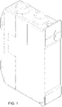

Drag the two basis-vector tips to build the 2×2 transform. det > 0 preserves handedness (rotation-like); det < 0 reverses it (a mirror). That sign is the whole same/mirror bit.
shape

US D949,851 · FIG. 1 the real figure (public domain)
Transform
+1.000
rigid (isometry)?
What each oracle rung sees
Rungs grading a sample candidate
candidate answers
Experiment baseline · best-of-N (60 items)
Tight (exact) climbs to 1.00 under best-of-N; the loose graders plateau ~0.80–0.85 (fluency even dips). Haiku-4.5, SO(2), 60 items. Stability · self-consistency 0.88 (58% of items unanimous across 8 samples) — the sample spread best-of-N selects from.